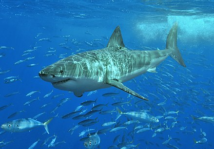

Fish
Cá
Cá là những động vật có dây sống, phần lớn là ngoại nhiệt (máu lạnh), có mang (một số có phổi) và sống dưới nước. Hiện người ta biết khoảng trên 31.900 loài cá, điều này làm cho chúng trở thành nhóm đa dạng nhất trong số các động vật có dây sống. Sự biến nhiệt cho phép thân nhiệt của chúng biến đổi theo sự thay đổi nhiệt độ của môi trường, mặc dù một số loài cá lớn có hoạt động bơi lội tích cực như cá mập trắng lớn và cá ngừ có thể duy trì một nhiệt độ lõi cao hơn.
Phân loại
Cá là một nhóm cận ngành: có nghĩa là bất kỳ nhánh nào có chứa tất cả các loài cá thì cũng chứa cả động vật bốn chân không phải là cá. Vì thế lớp Pisces trong các tài liệu cũ hiện tại không còn được sử dụng trong các phân loại chính thức. Cá được phân loại vào trong các nhóm chính sau đây (theo Janvier, 1981, 1997, Shu và ctv., 2003): • Lớp Myxini (cá mút đá myxin) • Lớp Pteraspidomorphi (cá giáp vây, loại cá không quai hàm tiền sử, từ kỷ Ordovic tới kỷ Devon) • Lớp Thelodonti (cá răng nhũ (núm vú), từ kỷ Ordovic tới kỷ Devon) • Lớp Anaspida (cá không giáp, từ kỷ Silur tới kỷ Devon) • Lớp Petromyzontida hay Hyperoartia (cá mút đá) • Lớp Conodonta (động vật răng nón) • Lớp Cephalaspidomorphi